We will display 2nd Armored Division unit crests below. If you have a better picture of any of the ones we show below, send it in and we will replace the one we have with yours. If you have a unit crest that you cannot identify, email in a photo and we will try to tell you what unit it represents. Even if you cannot send a photo just send us the motto, we can identify most crests. (All shown below were attached to the 2nd Armored Division at one time or another).
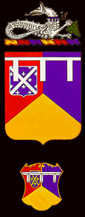
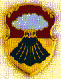
Greetings,
During
this time the 1st Battalion 67th Armored Regiment was under the leadership of
LTC (now LTG) Larry Jordan, LTC Pete Murray and LTC Dan Layton.
In 1988 the Battalion S-3, MAJ Reynolds, created an original piece of
artwork that was placed on coffee mugs, hats, and embroidered patches.
MAJ Reynolds superimposed a grim reaper image over the unit crest
holding five cards spelling DEATH. The
corner of each card included “HHC” “A” “B” “C” and “D” in
sequence. A golden scroll over
the top reads “1st Battalion 67th Armor Death Dealers.”
It was hugely popular with the soldiers of the battalion and sales
supported the family program. My
current jacket includes this patch on the right shoulder and Hell on Wheels on
the left.
Major
Ralph Trenary
“Red
Leader” 1st Platoon Delta Company, 1986-1988
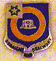
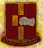
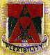
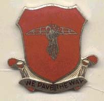
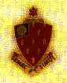
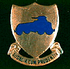
(Photo supplied by SFC Jose Ramirez - Germany)
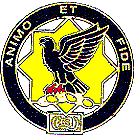
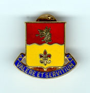
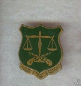